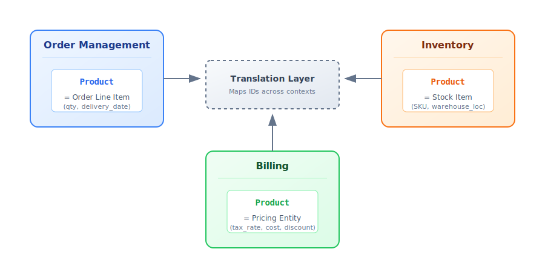
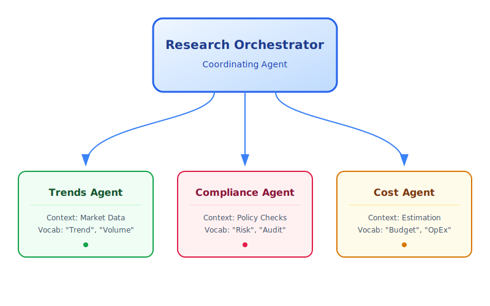
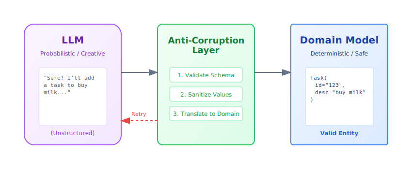

Domain-driven design for AI agents: a beginner-friendly guide
TL;DR
Domain-driven design (DDD) gives AI agent teams a shared language, clear boundaries, and code that mirrors the real world. Use it to tame prompt spaghetti, enforce business rules, and evolve systems without breaking everything.

Table of contents
- Domain-driven design for AI agents: a beginner-friendly guide
Why domain-driven design matters for AI agents
AI agent projects fail for a surprising reason: not because the code is bad, but because developers and domain experts can't understand each other. You've seen it—business teams ask for a "policy check" and get back a process_data() method. Nobody knows what it does, so requirements drift and systems calcify.
Domain-driven design (DDD) fixes this by putting the business domain at the center. Not the database schema. Not the prompt template. The actual real-world process you're trying to model. This alignment delivers three immediate wins:
- Shared language. Everyone—product, ops, engineering—uses the same words. When compliance says "refund request", that's what appears in your code, prompts, and documentation.
- Focused scope. You build what matters: the core workflows, compliance rules, and critical metrics. Not mountains of glue code that break when requirements shift.
- Adaptability. When policies change (and they will), you update one well-defined slice instead of hunting through a monolithic tangle.
This matters most in complex domains where rules evolve constantly—think finance, healthcare, operations, or any regulated industry. DDD gives you a fighting chance to keep up.
Strategic building blocks
DDD isn't one big idea—it's a toolkit of patterns that work together. It's often split into two parts:
- Strategic Design: The "big picture" stuff. Defining boundaries, teams, and how systems talk. This is crucial for multi-agent systems.
- Tactical Design: The code-level patterns (Entities, Aggregates). This keeps your agent's internal logic clean.
Here are the core concepts you'll use every day.
Ubiquitous language
This is the shared vocabulary that shows up everywhere: in meetings, documentation, prompts, and method names. No translation layers between "business speak" and "code speak."
If compliance says "policy check", your method is run_policy_check(), not process_data(). If doctors say "admit patient", you write admit_patient(), not add_user().
class PatientRegistry:
def admit_patient(self, patient_id: str) -> None:
"""Admit a patient to the registry - term used by medical staff."""
...
This eliminates translation gaps and makes code self-documenting. When requirements change, the language change is obvious and localized.
Bounded contexts
Large systems need explicit boundaries. Why? Because the same word means different things in different parts of the business.
Take "product" in e-commerce. In the Inventory context, a product is a catalog item with SKUs and stock counts. In the Billing context, it's a line item with pricing rules and tax calculations. In Order Management, it's a quantity and delivery promise.
Bounded contexts let each subdomain have its own definition without conflict. Translation layers or interfaces connect them when they need to talk.
Bounded contexts let each subdomain have its own definition without conflict. Translation layers or interfaces connect them when they need to talk.

This keeps each model lean and prevents the "one size fits all" model that becomes unwieldy as complexity grows.
Entities and value objects
These are the basic building blocks of your domain model. Understanding the difference is key.
Entities have identity that persists over time. A Task with ID 123 is the same task even if you change its description, status, or due date. Two entities are equal if they have the same ID, regardless of their attributes.
from pydantic import BaseModel
class SupportTicket(BaseModel):
ticket_id: str # This is the identity
customer: str
issue: str
status: str = "OPEN"
def close(self) -> None:
if self.status != "OPEN":
raise ValueError("Ticket already closed")
self.status = "CLOSED"
Value objects have no identity—they're defined entirely by their attributes. Two TimeSlot objects with the same start and end times are interchangeable. Value objects are immutable; instead of changing them, you create new ones.
from pydantic import BaseModel
class TimeSlot(BaseModel):
start: str # e.g., "2025-10-18 09:00"
end: str # e.g., "2025-10-18 10:00"
@property
def duration(self) -> int:
# Compute duration from start to end
...
Use entities for things that have lifecycles (Order, User, AgentSession). Use value objects for descriptions and measurements (EmailAddress, Priority, Location).
Aggregates
Aggregates are clusters of related entities and value objects that get treated as one unit. Think of them as consistency boundaries—within an aggregate, business rules must always hold true.
Every aggregate has one aggregate root—an entity that controls access to everything inside. Want to modify something in the aggregate? Go through the root. This enforces invariants and prevents invalid states.
from datetime import date
from pydantic import BaseModel, Field
class Task(BaseModel):
id: str
description: str
completed: bool = False
class Plan(BaseModel): # This is the aggregate root
id: str
tasks: list[Task] = Field(default_factory=list)
def add_task(self, task: Task) -> None:
# Business rule enforced here: no duplicate task IDs
if any(t.id == task.id for t in self.tasks):
raise ValueError("Task ID already exists")
self.tasks.append(task)
External code never touches the tasks list directly—it always calls add_task(). This guarantees the "no duplicate IDs" rule can never be violated. When you save to a database, you typically save the entire aggregate at once.
Repositories
Repositories abstract away persistence. To your domain code, it feels like working with an in-memory collection—no SQL queries, no database sessions, just clean methods like save() and get().
This separation has real benefits:
- Domain logic stays clean. It doesn't care if data lives in Postgres, MongoDB, or a JSON file.
- Testing is trivial. Swap in an in-memory repository for tests without touching domain code.
- Storage can evolve. Switch from SQLite to Redis without rewriting business rules.
from abc import ABC, abstractmethod
from pydantic import BaseModel, Field
class Task(BaseModel):
id: str
description: str
completed: bool = False
class Plan(BaseModel):
id: str
tasks: list[Task] = Field(default_factory=list)
class PlanRepository(ABC):
"""Domain layer defines the interface."""
@abstractmethod
def save(self, plan: Plan) -> None:
...
@abstractmethod
def get(self, plan_id: str) -> Plan | None:
...
class InMemoryPlanRepository(PlanRepository):
"""Infrastructure layer provides the implementation."""
def __init__(self) -> None:
self.storage: dict[str, Plan] = {}
def save(self, plan: Plan) -> None:
self.storage[plan.id] = plan
def get(self, plan_id: str) -> Plan | None:
return self.storage.get(plan_id)
Your domain code only knows about PlanRepository (the interface). The infrastructure layer plugs in the actual implementation.
Domain events
Domain events capture important things that happen in your system. They're named in past tense—OrderPlaced, TaskCompleted, PaymentFailed—because they represent facts.
Events make implicit side effects explicit. Instead of one module directly calling another when something happens, the domain raises an event. Other parts of the system subscribe and react independently.
from datetime import datetime
from pydantic import BaseModel
class TaskCompleted(BaseModel):
task_id: str
completed_at: datetime
When a task finishes, you emit TaskCompleted. A notification service might listen for this event and send an email. A reporting service might log it for analytics. The important part: the task aggregate doesn't need to know about emails or analytics. It just announces what happened.
This decouples workflows and makes cross-context communication clean. It's especially powerful in multi-agent systems where agents react to each other's events.
Translating DDD to agent architectures
AI agents deal with complexity—multi-step workflows, unreliable LLM outputs, evolving requirements. DDD's patterns map surprisingly well to these challenges. Here's how the concepts translate:
Bounded contexts become agents or skills
Each agent (or major capability) is a bounded context. A research orchestrator might coordinate three specialized agents:
- Trends Agent — gathers market data using its own vocabulary and tools
- Compliance Agent — runs policy checks with regulatory terminology
- Cost Agent — estimates expenses with finance-specific rules
Each has its own model, terminology, and invariants. They communicate through well-defined interfaces or events.
Each has its own model, terminology, and invariants. They communicate through well-defined interfaces or events.

Even in a single-agent system, you might define internal contexts—a Planning module and an Execution module, each with its own domain model.
Prompts honor the ubiquitous language
Use domain terms in system prompts, tool descriptions, and function signatures. If compliance experts say "policy check", that exact phrase appears in your prompts and code. This keeps humans and agents synchronized and makes the system easier to review and debug.
State becomes explicit entities
LLMs are often stateless, but complex agents maintain state—conversation sessions, goals, intermediate results, tool outputs. Model these as entities or value objects:
ConversationSessionentity with ID and message historyTaskentity representing units of workToolOutputvalue object for immutable results
Explicit modeling enables validation, business rules, and reuse. You can enforce rules like "a task can't be completed until dependencies finish" directly in the entity methods.
Aggregates express agent plans
A Plan aggregate root can govern task lists, enforce limits, and maintain priorities. When an LLM proposes adding 50 tasks, the aggregate enforces a maximum of 10. When it suggests duplicate work, the aggregate rejects it. This keeps AI proposals within business constraints.
Domain events drive orchestration
Agents raise events—ResearchCompleted, ThresholdExceeded, PolicyViolationDetected. Other agents or services listen and react without tight coupling. This event-driven approach is the future of scalable agent systems: it lets multiple agents collaborate in real-time without being hard-wired together.
Business rules wrap AI actions
LLM outputs flow through domain services or entity methods. If an LLM suggests a refund amount beyond policy limits, your RefundRequest value object validates and rejects it. The AI can improvise, but business rules have the final say. This keeps agents safe and aligned with policy.
The Anti-Corruption Layer (ACL)
When working with LLMs, you are dealing with a probabilistic, creative, and occasionally chaotic entity. Your domain model, however, must be deterministic and safe. You cannot let the raw output of an LLM leak directly into your domain logic.
Enter the Anti-Corruption Layer (ACL).

The ACL acts as a gatekeeper. It translates the "wild" output of the LLM into the "strict" language of your domain.
- Ingest: Receive raw text or JSON from the LLM.
- Validate: Use Pydantic models to check structure and types.
- Sanitize: Ensure values fall within acceptable ranges (e.g., no negative prices).
- Translate: Convert DTOs (Data Transfer Objects) into Domain Entities.
If validation fails, the ACL rejects the data—often sending an error message back to the LLM so it can correct itself. This loop ensures that only valid data ever touches your core business logic.
Example: a task assistant modeled with DDD
Let's build a personal task assistant that handles requests like "Remind me to buy milk tomorrow" or "What's on my to-do list?" We'll apply DDD principles step by step.
1. Map the contexts
Start by breaking the problem into subdomains:
- Task Management — handling to-do items and reminders (core domain)
- Scheduling — calendar events and meetings
- Notifications — sending alerts and emails
We'll focus on Task Management first. The others can evolve as separate bounded contexts or companion agents.
We'll focus on Task Management first. The others can evolve as separate bounded contexts or companion agents.

2. Speak the same language
Establish the vocabulary with domain experts (or just common sense for personal tasks): "task", "deadline", "reminder", "priority". Use these exact terms everywhere—prompt templates, method names, UI labels. No translation layers.
3. Capture entities, value objects, and events
Now model the core concepts:
- Entity:
Taskwith identity (id) and mutable state (completed) - Value object:
Priorityenum (immutable, defined by its value) - Domain event:
TaskCompletedEventto signal when work finishes
from datetime import datetime, date, timezone
from enum import Enum
from pydantic import BaseModel, Field
class Priority(Enum):
"""Value object: priority is defined by its value alone."""
LOW = 1
NORMAL = 2
HIGH = 3
class TaskCompletedEvent(BaseModel):
"""Domain event: announces a task was completed."""
task_id: str
time: datetime
class Task(BaseModel):
"""Entity: identity persists even as attributes change."""
id: str
description: str
created_at: datetime = Field(default_factory=lambda: datetime.now(timezone.utc))
due_date: date | None = None
priority: Priority = Priority.NORMAL
completed: bool = False
def mark_completed(self) -> TaskCompletedEvent:
"""Business rule: can't complete an already-completed task."""
if self.completed:
raise ValueError("Task is already completed.")
self.completed = True
return TaskCompletedEvent(task_id=self.id, time=datetime.now(timezone.utc))
Notice how business rules live in the entity methods, not scattered across prompt templates.
4. Shape the aggregate
The TaskList is our aggregate root. It holds multiple Task entities and enforces consistency rules across them. All modifications go through the root's methods.
from datetime import date
from pydantic import BaseModel, Field
class Task(BaseModel):
id: str
description: str
due_date: date | None = None
completed: bool = False
class TaskList(BaseModel):
"""Aggregate root: enforces invariants across all tasks."""
owner: str
tasks: list[Task] = Field(default_factory=list)
def add_task(self, task: Task) -> None:
"""Business rule: no duplicate tasks on the same day."""
if any(
existing.description == task.description
and existing.due_date == task.due_date
for existing in self.tasks
):
raise ValueError("A similar task on that date already exists.")
self.tasks.append(task)
def get_pending(self) -> list[Task]:
"""Query helper: find tasks that aren't done yet."""
return [task for task in self.tasks if not task.completed]
TaskList.model_rebuild() # Resolve forward references for Pydantic.
External code never manipulates tasks directly—it always goes through add_task() or other root methods. This guarantees the "no duplicates" rule holds.
5. Wrap persistence in a repository
The repository abstracts storage. Domain code doesn't know if tasks live in memory, a database, or a JSON file.
from pydantic import BaseModel, Field
class Task(BaseModel):
id: str
description: str
completed: bool = False
class TaskList(BaseModel):
owner: str
tasks: list[Task] = Field(default_factory=list)
TaskList.model_rebuild() # Resolve forward references for Pydantic.
class TaskRepository:
"""Abstracts task storage - in-memory implementation for simplicity."""
def __init__(self) -> None:
self._data: dict[str, TaskList] = {}
def get_task_list(self, owner: str) -> TaskList:
"""Retrieve a user's task list, or create a new empty one."""
return self._data.get(owner, TaskList(owner=owner))
def save_task_list(self, task_list: TaskList) -> None:
"""Persist changes to the task list."""
self._data[task_list.owner] = task_list
In production, you'd swap this for a database implementation—say, using SQLAlchemy or Postgres—without touching the domain logic.
6. Run the flow
Here's how everything fits together when a user makes a request:
from datetime import date, timedelta
from uuid import uuid4
from pydantic import BaseModel, Field
class Task(BaseModel):
id: str
description: str
due_date: date | None = None
completed: bool = False
class TaskList(BaseModel):
owner: str
tasks: list[Task] = Field(default_factory=list)
def add_task(self, task: Task) -> None:
if any(
existing.description == task.description
and existing.due_date == task.due_date
for existing in self.tasks
):
raise ValueError("A similar task on that date already exists.")
self.tasks.append(task)
class TaskRepository:
def __init__(self) -> None:
self._data: dict[str, TaskList] = {}
def get_task_list(self, owner: str) -> TaskList:
return self._data.get(owner, TaskList(owner=owner))
def save_task_list(self, task_list: TaskList) -> None:
self._data[task_list.owner] = task_list
TaskList.model_rebuild() # Resolve forward references for Pydantic.
# User says: "Remind me to buy milk tomorrow"
# (In reality, an LLM would parse this into structured data)
user_input = "Remind me to buy milk tomorrow"
intent = "add_task"
# Initialize repository
repo = TaskRepository()
if intent == "add_task":
# 1. Load the user's task list
task_list = repo.get_task_list(owner="User123")
# 2. Create a new task entity
task = Task(
id=str(uuid4()),
description="buy milk",
due_date=date.today() + timedelta(days=1),
)
# 3. Domain layer enforces business rules
try:
task_list.add_task(task)
repo.save_task_list(task_list)
print(f"Task '{task.description}' added for {task.due_date}.")
except Exception as exc:
print(f"Sorry, I couldn't add that task: {exc}")
Notice the separation of concerns:
- LLM layer parses natural language into structured data (intent + parameters)
- Domain layer enforces business rules through entity methods
- Repository layer handles persistence without leaking into domain logic
The LLM can be creative with parsing, but the domain ensures consistency. If the LLM tries to add a duplicate task, the aggregate root rejects it—no special-casing needed in prompts.
Tooling to bring the model to life
DDD doesn't require special frameworks, but certain tools make implementation smoother—especially for AI agents.
FastAPI
FastAPI pairs beautifully with DDD. Use routers to separate bounded contexts (/tasks, /schedule), Pydantic models for request/response validation, and dependency injection to wire up repositories.
Structure your project in layers:
project/
├── domain/ # Pure business logic (entities, aggregates, value objects)
├── application/ # Use cases and command handlers
├── infrastructure/ # Repositories, databases, external APIs
└── interface/ # FastAPI routers and HTTP contracts
This layering (sometimes called "onion architecture") keeps changes from rippling through your codebase. Swap the database? Touch only infrastructure/. Change the UI? Touch only interface/.
Pydantic and Pydantic AI
Pydantic enforces invariants and validates data at runtime. Use it for entities, value objects, and especially for validating LLM outputs.
Pydantic AI takes this further: it ensures LLM responses conform to your domain schemas. Define an AddTaskCommand with required fields, and Pydantic AI validates that the LLM's JSON output matches before you act on it. This brings structure to the chaotic world of AI outputs.
Another excellent tool is Instructor, which patches OpenAI (and other) clients to return Pydantic models directly. It's a lightweight way to implement your Anti-Corruption Layer.
DDD helper libraries
- DDDesign — provides base classes for entities, repositories, and value objects built on Pydantic
- Protean — a full framework for DDD, CQRS, and event sourcing if you want something that comes with a lot of ready-made features out of the box
Most Python developers skip these and use vanilla classes with Pydantic, but they're worth exploring for large projects.
Event-driven tooling
For domain events, consider:
- blinker — lightweight in-process event dispatcher
- redis-py Pub/Sub or RabbitMQ — for distributed events across services or agents
- asyncio event patterns — if you're already async
Events are crucial for multi-agent orchestration. An agent emits ResearchCompleted, others react—no tight coupling.
Agent frameworks
LangChain, LangGraph, Haystack, Semantic Kernel, LlamaIndex, AutoGen, Google ADK, smolagents, and CrewAI provide structure for modern agent workflows. Use them within your domain layer, but wrap them in your own interfaces. That way, swapping frameworks doesn't break your business logic.
Testing
One of DDD's biggest wins: your domain layer tests without the whole stack running.
- PyTest for unit tests on entities and aggregates
- Fake repositories (in-memory) for integration tests
- LLM stubs that return predetermined outputs
Your domain code should never require a live LLM to test. The LLM is an implementation detail—your tests validate business rules.
Getting started checklist
Ready to apply DDD to your next agent project? Here's your roadmap:
- Interview domain experts. Draft the ubiquitous language—the vocabulary everyone will use. Document it.
- Map bounded contexts. Draw the subdomains and mark where they need to talk to each other. Start with one core context.
- Model entities and value objects. What things have identity? What things are just values? Bake invariants into their methods.
- Define aggregate roots. Bundle related entities under one root that enforces consistency rules.
- Create repository interfaces. Don't implement storage yet—just define
save()andget()methods. Keep the domain clean. - Emit domain events. For meaningful changes (order placed, task completed), raise events. Wire listeners later as needed.
- Wrap LLM outputs in schemas. Use Pydantic models to enforce contracts. Don't let free-form text leak into your domain.
- Add orchestration. Build application services that coordinate agents via structured commands or events.
The golden rule: start with the domain, not the tech stack. Understand the business problem first. Model it explicitly. Then let the AI tooling serve that model—not the other way around.